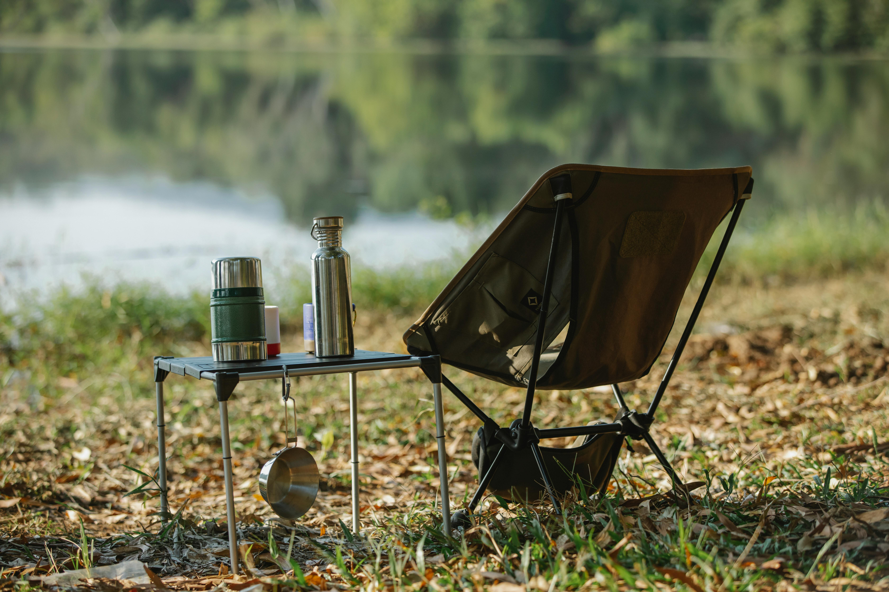
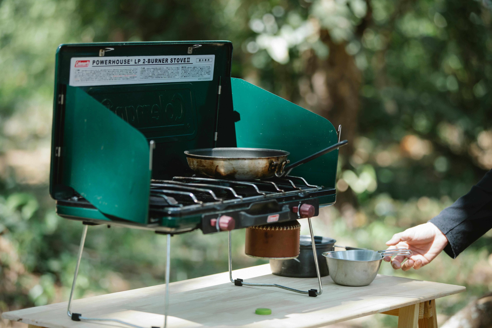

Simple Car Camping Setup
You don't need an expensive RV to start your journey. Most road trips can be done comfortably by transforming your current vehicle into a sleeping space with just a few basic adjustments. We’ll show you how to set up a cozy interior so you can wake up at the doorstep of a National Park.

Essential Budget Gear
Affordable gear examples.
- Multi-purpose LED Lanterns: Choose rechargeable or battery-powered lanterns that double as a power bank for your phone.
- Compact Portable Stoves: Single-burner butane or propane stoves are inexpensive, easy to use, and perfect for cooking quick meals at a campsite.
- Insulated Sleeping Pads: Instead of a bulky mattress, a foam or inflatable pad provides necessary insulation from the cold ground for a fraction of the cost.
- Soft-Sided Coolers: These are more affordable and space-efficient for car camping than hard-shell versions, keeping your food fresh for days.
- Thrifted Cooking Kits: You don't need "camping" pots; high-quality stainless steel cookware from thrift stores works perfectly on a portable stove.

Camping Budget Tips
Tips for saving money.
- Find Free Campsites: Utilize apps to locate free "dispersed camping" on National Forest or BLM lands.
- The "America the Beautiful" Pass: Invest in a National Parks Annual Pass to save significantly if you plan to visit more than three parks.
- Cook Your Own Meals: Avoid the "tourist trap" restaurants near parks by prepping simple meals at your car.
- Travel with Friends: Split the cost of gas, park entry fees, and ice with a group to make the trip even more affordable.

Making Your Gear Last for Years
Investing in budget-friendly gear is only half the battle; knowing how to care for it ensures you won't have to replace items after every season. Simple habits, such as thoroughly drying your tent and sleeping bag before storage, prevent mold and keep your equipment in top condition for your next adventure. Taking a few minutes to clean your portable stove and inspect your vehicle's setup after each trip can save you hundreds of dollars in the long run. By treating your simple gear with care, you build a reliable kit that grows with your experience, allowing you to focus your limited budget on new destinations rather than replacement costs.